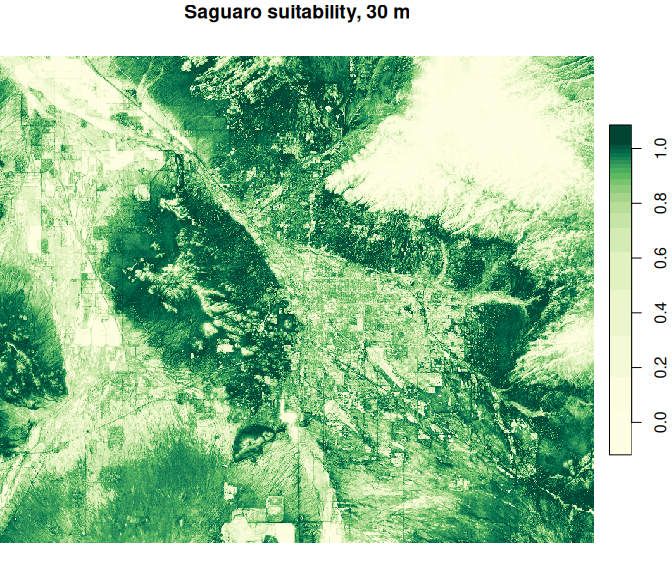

AlphaSDM fits species distribution models and maps habitat suitability at up to 10 m resolution, anywhere on Earth, from occurrence records alone. It models species on the embeddings of AlphaEarth, Google DeepMind’s geospatial foundation model, instead of environmental layers you collect yourself, and runs every step on Google Earth Engine.


Saguaro around Tucson, Arizona: GBIF records and pseudo-absences (left), and the fitted habitat-suitability map at 30 m (right). The full example is in vignette("AlphaSDM").
Why AlphaSDM
- No environmental layers. There is nothing to find, download, reproject or align; the embeddings already describe every pixel.
- Fine resolution everywhere. 10 m pixels, every year from 2017, on land anywhere on Earth.
- Nothing to download but the map. Sampling, model fitting and prediction all run on Earth Engine, so a large study area costs your computer nothing.
- An ensemble with calibration built in. Support vector machine, random forest and boosted trees by default, scored with AUC, TSS and the Boyce index.
- Explicit modelling choices. Pseudo-absence placement follows Barbet-Massin et al. (2012), and AlphaSDM makes you choose the strategy rather than choosing it for you.
AlphaEarth embeddings
AlphaEarth Foundations is a Google DeepMind model that condenses optical, radar, lidar, climate and other data into 64 numbers per 10 m pixel per year. The annual embeddings are a public Earth Engine dataset, currently covering 2017 to 2025. Records are matched to the embeddings for the year they were made.
Earth Engine setup
AlphaSDM runs on your own Earth Engine account, which is free for noncommercial use.
- Register for Earth Engine. This gives you a Cloud project ID.
- Connect once per machine. A browser window asks you to allow access, and the connection is remembered after that.
library(AlphaSDM)
setup_gee(project = "your-project-id")
gee_status() # checks credentials, project and a live connectionOn a machine without a browser, use setup_gee(auth_mode = "notebook") to paste a code instead. clear_gee_credentials() resets everything.
Example
Download one year of saguaro records from GBIF, add pseudo-absences, evaluate the default ensemble on a spatial holdout, and map suitability:
library(AlphaSDM)
url <- paste0("https://api.gbif.org/v1/occurrence/search?",
"scientificName=Carnegiea%20gigantea&year=2022",
"&hasCoordinate=true&hasGeospatialIssue=false",
"&coordinateUncertaintyInMeters=0,30",
"&decimalLongitude=-111.4,-110.6&decimalLatitude=31.9,32.6&limit=300")
obs <- do.call(rbind, lapply(c(0, 300), function(offset)
jsonlite::fromJSON(paste0(url, "&offset=", offset))$results[
, c("decimalLongitude", "decimalLatitude", "year")]))
pres <- format_data(obs, coords = c("decimalLongitude", "decimalLatitude"), year = "year")
occ <- generate_pseudo_absences(pres, aoi = "bbox", strategy = "combined",
n = nrow(pres), aoi_year = 2022)
set.seed(1)
test <- stats::kmeans(occ[, c("longitude", "latitude")], centers = 5)$cluster == 1
fit <- evaluate_models(occ[!test, ], predict_coords = occ[test, ])
fit$metrics$ensemble
maps <- generate_map(occ, aoi = "bbox", scale = 30, aoi_year = 2022,
output_dir = "saguaro")generate_map() writes one GeoTIFF per model plus the ensemble. Maps download straight from Earth Engine in tiles; a map Earth Engine will not compute that way goes through its batch system and Google Drive instead, which is slower.
Models
The default ensemble is c("svm", "rf", "gbt"). methods = also accepts "maxent", "glm", "cart", "knn", "mindist" and "similarity", all fitted on Earth Engine; see ?evaluate_models.
Related packages
biomod2, flexsdm, ENMeval, sdm and Wallace fit species distribution models on environmental layers you supply; AlphaSDM replaces those layers with one embedding dataset and moves the computation to Earth Engine. blockCV builds spatial cross-validation folds, which pair well with evaluate_models(). rgee is the general-purpose R interface to Earth Engine.
Getting help
Report bugs and request features in GitHub issues, or email james.longo.birds@gmail.com. AlphaSDM is in active development, so arguments and defaults may still change.
Citation
Run citation("AlphaSDM") in R, or use GitHub’s “Cite this repository” button, which reads CITATION.cff.
License
MIT; see LICENSE.md. The AlphaEarth embeddings are provided by Google under the terms of the Earth Engine dataset.